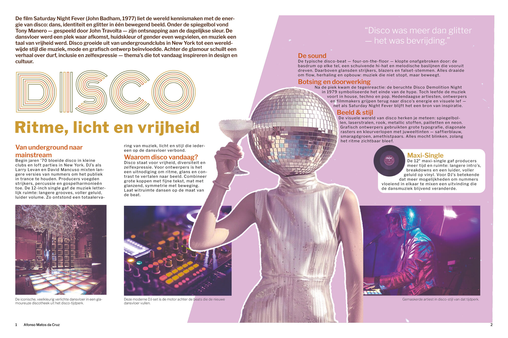
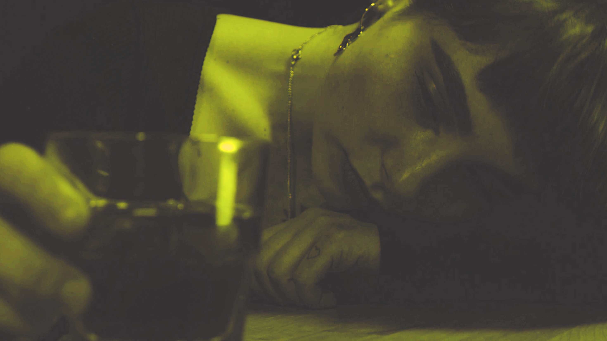

Disco Revisited: From Memphis to Motion vertrekt bij Saturday Night Fever (1977) en onderzoekt hoe ritme, licht en kleur uit de discoscene voortleven in design.
Die energie leefde voort in de Memphis-beweging (Milaan, 1981): Ettore Sottsass en zijn groep vertaalden de vrijheid van de dansvloer naar meubels, patronen en visuele taal. Het project bundelt onderzoek en moodboards met een editorial spread, sfeerfilm en website — één coherente visuele stem.
Editorial Spread — InDesign · Dubbele pagina

Hero Compositie
"Van de dansvloer naar het designbureau — ritme is overal."
— Project Disco · From Memphis to Motion · 2025
Moodboards — Onderzoek & Referenties
Illustratie — DJ Plaat
Sfeerfilm — Adobe Premiere Pro
Sfeerfilm · Adobe Premiere Pro · 2025
Video Still
